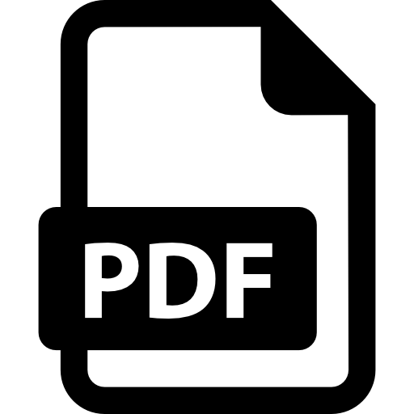
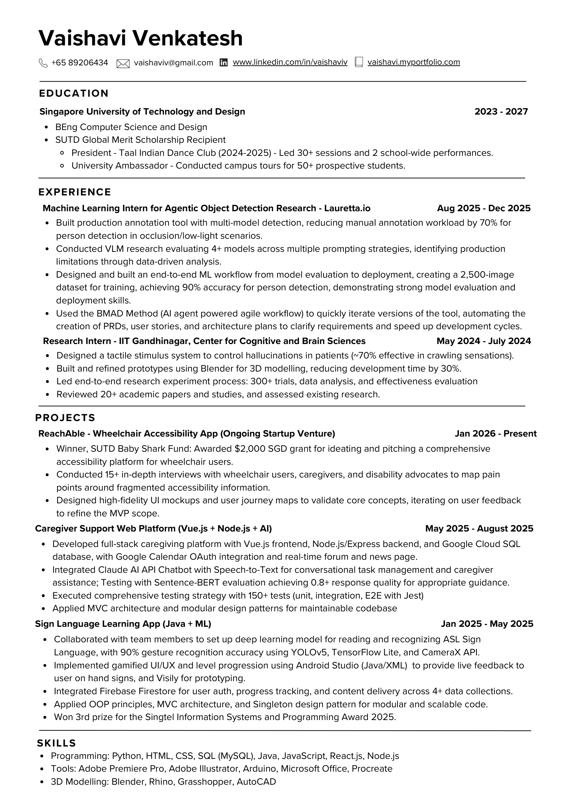

ReachAble
Personal project building accessible experiences for wheelchair users.
Computer Science @ SUTD | AI & ML
I enjoy turning ideas into reliable products using scalable full-stack development,
AI-driven applications,
and human-centered design.
Hi, I'm Vaishavi!
I'm currently studying Computer Science and Design at the Singapore University of Technology and Design (SUTD), with a minor in Artificial Intelligence and Design, Technology, and Society.
I'm all about mixing code, creativity, and user-centered design to solve real problems — because I believe the best tools are the ones that make people's lives a little easier.
When I'm not running from deadlines, you'll find me sketching, performing on stage, or buried in a book. These little sparks of inspiration often end up in my projects.
Personal project building accessible experiences for wheelchair users.
ASL recognition app with gamified learning and real-time feedback.
Caregiver support platform focused on wellbeing, AI assistance, and workflow simplicity.
Tactile stimuli system research to emulate insect crawling sensations.
Interactive sensory experience for student wellness and relaxation.
Python recreation of Wordle with unlimited attempts for practice and testing.
Robot navigation project with exhaustive-search TSP optimization in Python.
Personal artwork collection including portraits and watercolor studies.

Download Resume